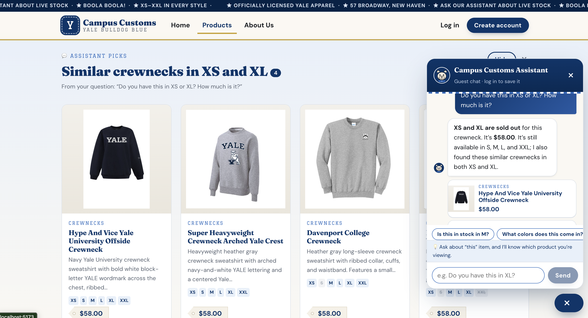
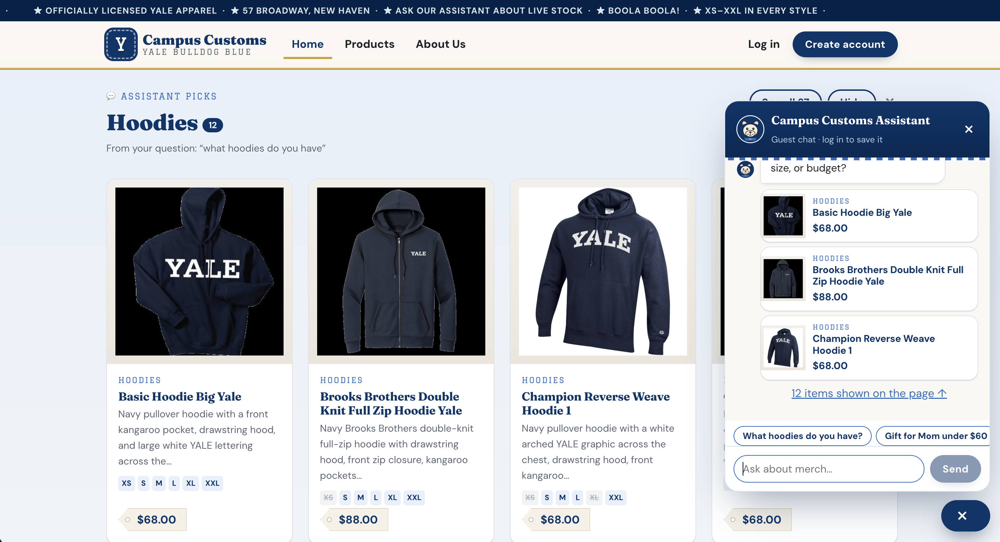
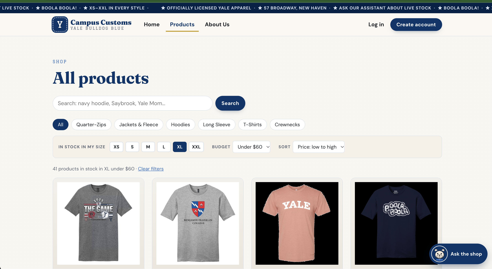

Chat checks the inventory of an item
What this proves: on the Baseball Left Chest Crewneck page, the assistant answers "do you have this in XS and XL?" with the real database values. It says the item is sold out in XS and XL, gives the exact price of $58.00, and lists the sizes still in stock. It knew which item "this" meant from the page context.

find_similar_products and put 4 in-stock alternatives, all $58.00 with XS and XL available, on the page as "Similar crewnecks in XS and XL". The audit trail (run cb5462b6) shows the exact calls: check_stock XS → sold out, check_stock XL → sold out, get_price → $58.00.Database says (campus_customs.db)
Baseball Left Chest Crewneck: price $58.00
| Size | Quantity | Status |
|---|---|---|
| XS | 0 | sold out |
| S | 15 | in stock |
| M | 5 | low (5 left) |
| L | 25 | in stock |
| XL | 0 | sold out |
| XXL | 25 | in stock |
The chat's numbers must match this table. The backend fact-checker rejects any price or count no tool returned.
How it was captured
Open/products/baseball-left-chest-crewneck, open the chat (💬), and ask: "Do you have this in XS or XL? How much is it?" Take a screenshot showing the reply and the stock table.
Dynamic search-result cards after a category question
What this proves: asking "What hoodies do you have?" makes the agent search the catalogue and return structured product matches. The website then renders them as an "Assistant picks: Hoodies" section of product cards (photo, name, price, short description, size row) on the page itself, with a "See all" link to the full list.


How it was captured
On the Home page, open the chat and ask "What hoodies do you have?" Screenshot the page with the "Assistant picks" cards and the chat. Optionally, click a card and screenshot the detail page ashoodies_detail.png.
Smarter Products page: in stock in my size, budget, sort
What this proves: the Products page filters to items that are in stock in XL and under $60, sorted by price low to high. Every card shows its size row, with sold-out sizes crossed out and XL highlighted, so shoppers only see what they can actually buy.

/products?size=XL&max=60&sort=price-asc. The database has 41 products in stock in XL under $60, which should match the count shown above the grid.